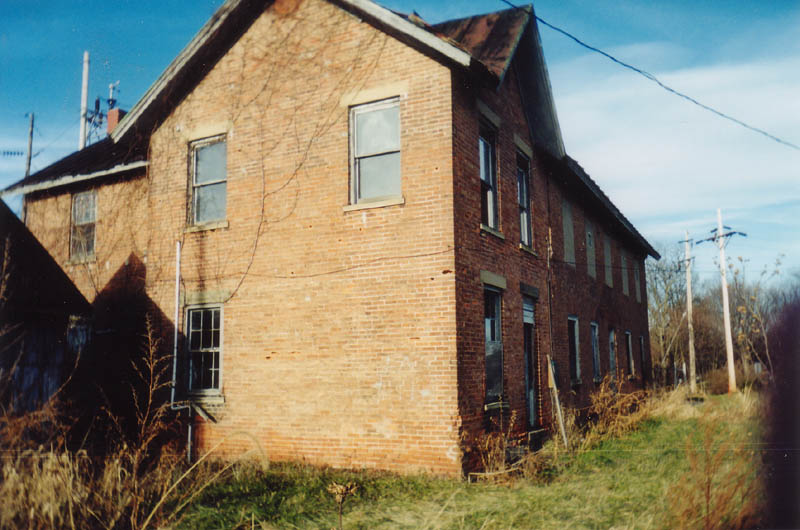
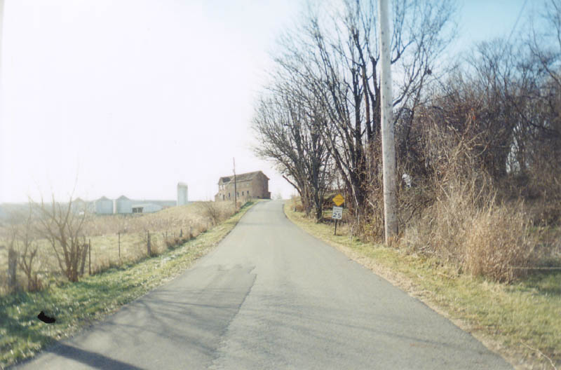
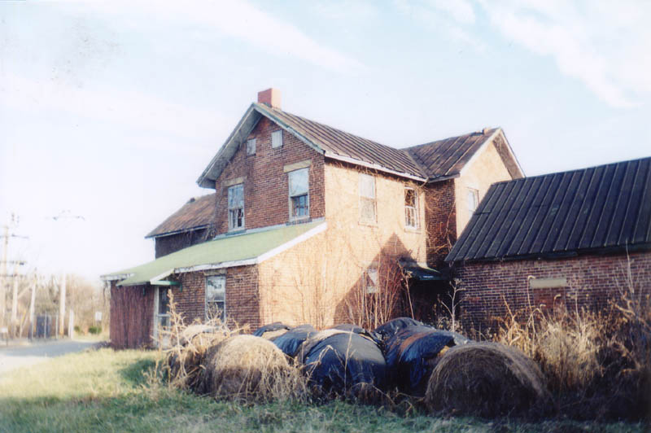

The Ross County Retirement Home

A website reader alerted me to the existence of this large abandoned building on State Route 104 in Ross County. It's north of Chillicothe in Union Township, set way back from the highway beside Infirmary Lane.

I do not have much specific information about the place. I only know it was a retirement home because I was told so; if you have other information about the building or the people who used to inhabit it, please let me know. It's certainly large enough to be a retirement home of some sort, but it would also make a nice home for a single (large) family.

The Ross County Retirement Home doesn't really have an institutional look to it, though it does look sort of vaguely like an old school or something. There's no parking lot. I can't say when it was built or how long it's been closed down. Clues can be found inside, in the mostly-vacant rooms; I was able to explore them with my friend Erik in April of 2003. For an online tour the building, click below.
Back
{kind=link}
{kind=link}
{kind=link}